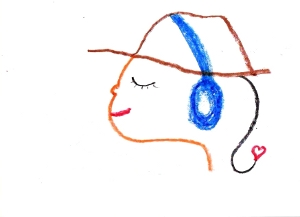

Listen to NACOS radio broadcasts.
過去のものは、左メニュー"NACOS Radio"の下、"Archives"をクリックしてください。
December 2012

■ Kenkou corner
■ Haiku
■ Japanese Proverb
■ We will post a new set of audio recordings of native Japanese speakers reading stories that were written by NACOS students.
| © 1995-2013 NACOS International Institute. All Rights Reserved. |